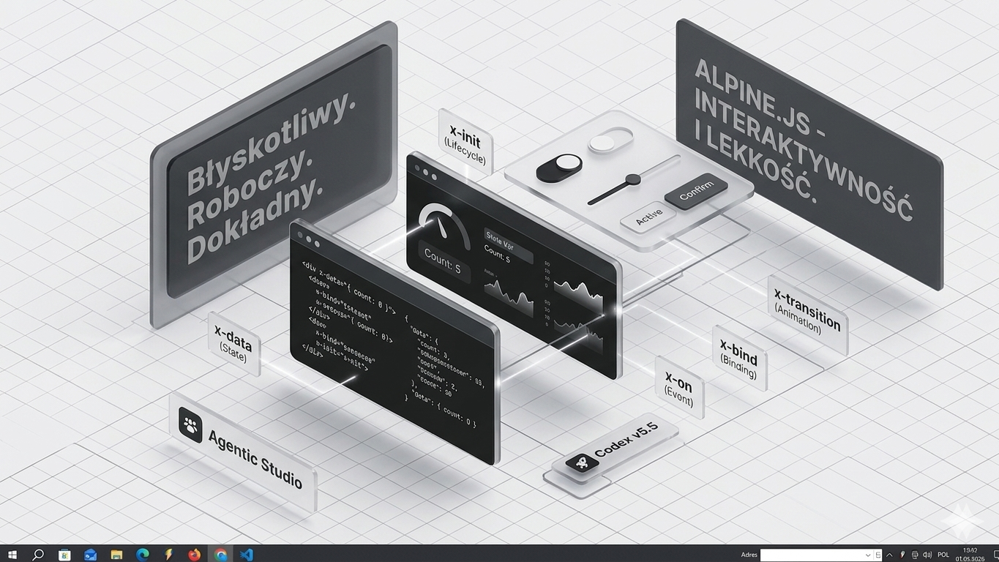

x-data jako lokalny stan
Dobry dla pojedynczych sekcji: aktywny filtr, otwarty modal, zaznaczony tryb albo licznik wyników.
Alpine.js pasuje do tego projektu jako cienka warstwa zachowań: stan blisko HTML, małe komponenty, przełączniki, filtry, modal search i płynne przejścia bez budowania dużej aplikacji SPA.

Dobry dla pojedynczych sekcji: aktywny filtr, otwarty modal, zaznaczony tryb albo licznik wyników.
Zdarzenia i klasy mogą zostać przy elemencie, więc małe interakcje są czytelne bez szukania logiki po wielu plikach.
Przejścia modalu, paneli i dropdownów da się prowadzić spójnie, bez dokładania ciężkiej warstwy animacji.
Ten kierunek jest najmocniejszy tam, gdzie potrzebujemy zachowania komponentu, ale nie pełnego frameworka.
Stan otwarcia, query, tryb topics/context i lista pierwszych wyników.
Lokalne filtrowanie sekcji bez przepisywania istniejącego układu.
Aktywne stany, przejścia, focus i małe komunikaty przy interakcji.